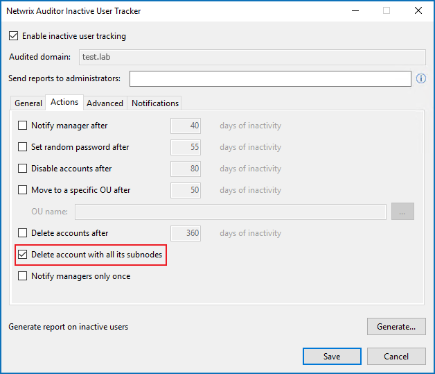

Question
Your report states some accounts were not moved or deleted. Why were they not affected?
Answer
Since IUT has the ability to make actual changes within your Active Directory, it has requirements to meet to introduce these changes. IUT requires all DCs to be operating, otherwise it cannot verify that a user is truly inactive. In case there are non-operable or decommissioned domain controllers in your network, you can omit them — refer to the following article for additional information: Exclude Non-operable Domain Controllers from Monitoring.
If you still encounter reports showing the Cannot delete the account status
for accounts after omitting the inoperable DCs, refer to the following steps:
-
This error might appear if the targeted computer account is not an end object but a container for other objects. IUT won't be able to remove those accounts unless the Delete account with all its subnodes checkbox is checked.
IMPORTANT: This will lead to the deletion of the entire container considered as inactive by IUT.
-
The data collection account used by IUT does not have sufficient rights and permissions. Refer to the following article for additional information on roles, rights, and permissions required for Inactive User Tracker data collection account: Monitoring Plans — Data Collecting Account.
-
The account has the Protect object from accidental deletion checkbox checked in Properties > Object. This is a Windows Active Directory feature to prevent the deletion and moving of flagged objects without admin intervention. IUT cannot override this feature, it is required to manually edit the flag.